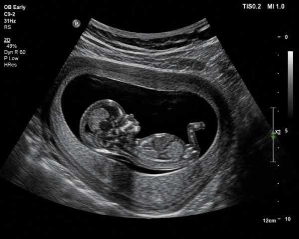

You have just confirmed you are pregnant. Congratulations. And almost immediately the questions begin: when do I go for a scan? Which scan comes first? Is it too early? Will I hear the heartbeat? If you are searching for a pregnancy scan near me in Madurai and feeling overwhelmed by the options, you are in exactly the right place. The first early pregnancy scan is one of the most important appointments of your entire antenatal journey — it confirms the pregnancy is in the correct location, checks for a heartbeat, establishes how far along you are, and sets the foundation for every scan that follows. At Meera 4D Scans — the most trusted scan centre in Madurai — we guide first-time mothers through every step of this process, from the 7 week ultrasound that detects the very first heartbeat to the dating scan Madurai that calculates your due date, and beyond. This guide covers when to book your early pregnancy scan, what to expect at each appointment, the complete first-time mom scan checklist Madurai, and why Meera 4D Scans is the scan centre in Madurai that thousands of families trust for every stage of their pregnancy journey. Book your first appointment today or call +91-9042883031.
When Should You Book Your First Pregnancy Scan?
The most common question at our scan centre in Madurai from first-time mothers is simply: when? The answer depends on what you want your early pregnancy scan to confirm — but there is a clear clinical window that produces the most complete and reassuring results.
The optimal time for your first early pregnancy scan in Madurai is between 6 and 9 weeks of pregnancy. This window ensures that the gestational sac, yolk sac, and fetal pole are all clearly visible on ultrasound, that the heartbeat scan can detect fetal cardiac activity reliably, and that the sonologist can measure the crown-rump length (CRL) to accurately confirm gestational age. Booking your pregnancy scan near me earlier than 6 weeks risks an inconclusive result — the structures may simply be too small to image clearly, leading to anxiety rather than reassurance. Waiting beyond 10–12 weeks for your first scan means delaying critical information about pregnancy location, viability, and the number of babies — information your obstetrician needs as early as possible.
The 7 week ultrasound is the single most popular first appointment at Meera 4D Scans — the leading scan centre in Madurai for early pregnancy scan bookings. At exactly 7 weeks, the fetal heartbeat is reliably detectable, the pregnancy is clearly visible, and the gestational age measurement is at its most accurate. If you are searching for a pregnancy scan near me and you are around 7 weeks pregnant, today is the right time to book.
What Does an Early Pregnancy Scan Actually Show?
Many first-time mothers are unsure what to expect from their first early pregnancy scan in Madurai. Understanding what the scan checks — and why each finding matters — helps you arrive prepared and leave reassured. At Meera 4D Scans, every first trimester ultrasound is a comprehensive clinical assessment, not simply a brief look.
Key Findings at Your Early Pregnancy Scan
- Pregnancy location — the most critical finding of any early pregnancy scan is confirming the pregnancy is inside the uterus (intrauterine) and not in the fallopian tube (ectopic). An ectopic pregnancy is a medical emergency, and the 7 week ultrasound at a quality scan centre in Madurai identifies this definitively
- Heartbeat scan confirmation — fetal cardiac activity is typically first detectable at around 6 weeks and is reliably visible at the 7 week ultrasound stage. The heartbeat scan at Meera 4D Scans shows the fetal heart rate in real time, with the rate and rhythm documented in your report — the first clinical reassurance of a viable pregnancy
- Number of babies — your early pregnancy scan confirms whether you are carrying one baby, twins, or more. Identifying multiple pregnancies early is essential for appropriate antenatal planning, and the first trimester ultrasound is the most accurate time to make this determination
- Gestational age and due date — the dating scan Madurai measures the crown-rump length (CRL) of your baby. This measurement, combined with the known date of your last menstrual period, gives the most accurate estimate of how many weeks pregnant you are and calculates your expected due date. The dating scan Madurai at 7–10 weeks is the gold standard for this — more accurate than a scan performed later in pregnancy
- Uterine and ovarian assessment — the early pregnancy scan also examines the uterus for fibroids, the ovaries for cysts, and the pelvis for any structural findings that may be relevant to your pregnancy management — a complete clinical assessment, not just a heartbeat check
The 7 Week Ultrasound: What to Expect at Your Appointment
The 7 week ultrasound is the appointment most first-time mothers describe as the most emotionally significant of their entire pregnancy — the first time they see something on screen and hear that the pregnancy is real, located correctly, and growing well. At Meera 4D Scans — the scan centre in Madurai trusted by thousands of families — our 7 week ultrasound is a complete clinical examination performed by an experienced obstetric sonologist.
Transabdominal vs Transvaginal at the 7 Week Ultrasound
At 7 weeks, your early pregnancy scan may be performed either transabdominally (through the abdomen using gel) or transvaginally (using an internal probe). Most first-time mothers are surprised to learn that a transvaginal scan at this stage is not uncomfortable and produces significantly clearer images than a transabdominal approach — particularly when bladder filling is incomplete or abdominal wall thickness limits visibility. Our team at Meera 4D Scans — the most comprehensive scan centre in Madurai for first trimester ultrasound — explains the approach before the scan begins and allows you to make an informed choice.
For a transabdominal 7 week ultrasound, you will be asked to attend with a moderately full bladder to provide an acoustic window through the abdomen. For a transvaginal early pregnancy scan, no bladder preparation is needed. Our team at Meera 4D Scans will advise you on preparation when you book your pregnancy scan near me appointment.

Dating Scan Madurai: How Your Due Date Is Calculated
The dating scan Madurai is sometimes confused with the early pregnancy scan, but they are often the same appointment — the first trimester ultrasound performed between 7 and 13 weeks that establishes the gestational age and due date of your pregnancy. Understanding what the dating scan Madurai measures — and why the timing of this scan matters so much — helps first-time mothers appreciate why booking early is so important.
How the Dating Scan Madurai Calculates Your Due Date
| Measurement | What It Tells the Sonologist | Why It Matters for Your Pregnancy |
|---|---|---|
| Crown-Rump Length (CRL) | The distance from the top of the baby's head to the base of the spine — the primary measurement of the dating scan Madurai at 7–13 weeks | The CRL is the most accurate single measurement for confirming gestational age in the first trimester ultrasound, accurate to within 3–5 days when performed at the correct gestational window |
| Gestational sac diameter | The size of the fluid-filled sac surrounding the embryo — the first visible structure in any early pregnancy scan | Confirms the pregnancy is developing inside the uterus and provides a secondary size estimate before the fetal pole is measurable |
| Fetal heart rate (FHR) | Beats per minute of fetal cardiac activity detected during the heartbeat scan component of the dating scan Madurai | A normal FHR of 90–170 bpm (depending on gestational week) at the 7 week ultrasound is the primary marker of a viable, developing pregnancy |
| Number of embryos and chorionicity | Whether one or more embryos are present; in twin pregnancies, whether they share a placenta (monochorionic) or have separate placentas (dichorionic) | Multiple pregnancy chorionicity — detected at the dating scan Madurai in the first trimester ultrasound — determines the entire antenatal monitoring plan for twins |
| Uterine and adnexal assessment | Examination of the uterus, cervix, and ovaries for fibroids, ovarian cysts, or structural findings relevant to the pregnancy | Findings identified at the early pregnancy scan stage can be incorporated into your obstetrician's management plan from the outset, rather than being discovered later |
At Meera 4D Scans — the scan centre in Madurai most families trust for their dating scan Madurai — every measurement is performed by an experienced obstetric sonologist and documented in a detailed same-day report delivered to WhatsApp or email before you leave. Book your dating scan Madurai today.
Heartbeat Scan: What a Normal Result Looks Like
The heartbeat scan is often the most emotionally charged moment of the entire first trimester — the first visual and audible confirmation that the pregnancy is alive and developing. Patients searching for a pregnancy scan near me specifically to confirm a heartbeat should understand what a normal heartbeat scan result shows and what to do if the result is inconclusive.
Heartbeat Scan: Normal Ranges by Gestational Week
- 6 weeks — fetal cardiac activity may be visible but is not reliably detectable in all pregnancies. An inconclusive heartbeat scan at 6 weeks does not indicate a problem — a repeat early pregnancy scan at 7 weeks is the standard recommendation from any quality scan centre in Madurai
- 7 weeks — the 7 week ultrasound detects fetal cardiac activity in the vast majority of viable pregnancies. The normal fetal heart rate at this stage is approximately 90–110 beats per minute. This is the most reliable window for a confirmatory heartbeat scan at our scan centre in Madurai
- 8–10 weeks — the fetal heart rate rises progressively, reaching 160–170 bpm by 10 weeks. A heartbeat scan at this stage also shows early fetal movement — the embryo can be seen moving within the gestational sac, which is deeply reassuring for parents attending the first trimester ultrasound
- 11–13 weeks — by the time of the NT scan, the fetal heart rate has stabilised to approximately 150–170 bpm. The heartbeat scan component of the NT scan at Meera 4D Scans confirms ongoing viability alongside the chromosomal risk assessment
First Trimester Ultrasound Schedule: Every Scan You Need
Understanding the complete first trimester ultrasound schedule helps first-time mothers plan their appointments from the moment they confirm their pregnancy. The scan schedule recommended by Meera 4D Scans — the scan centre in Madurai for all maternity imaging — covers every clinical checkpoint from the earliest early pregnancy scan through to the end of the first trimester.
First Trimester Scan Schedule at Meera 4D Scans
| Gestational Week | Scan Type | Primary Purpose |
|---|---|---|
| 5–6 weeks | Very early pregnancy scan | Confirms intrauterine pregnancy; gestational sac and yolk sac visible; heartbeat scan not yet reliable at this stage — repeat at 7 weeks advised |
| 7 weeks | 7 week ultrasound / early pregnancy scan | Fetal heartbeat detected; CRL measured for dating scan Madurai; number of embryos confirmed; ectopic pregnancy excluded — the ideal first appointment at any scan centre in Madurai |
| 8–10 weeks | Viability / reassurance scan | Confirms ongoing heartbeat scan viability; fetal movement visible; uterine and ovarian assessment complete. Recommended for patients with a history of miscarriage or IVF pregnancies |
| 11–13+6 weeks | NT scan (Nuchal Translucency) / first trimester ultrasound chromosomal screen | Nuchal translucency measurement for Down syndrome and chromosomal risk assessment; combined with maternal blood markers for the most accurate first trimester screening result available at maternity clinics Madurai |
First-Time Mom Scan Checklist Madurai: Your Complete Pregnancy Scan Guide
One of the most common requests our team at Meera 4D Scans receives from first-time mothers is for a complete, practical first-time mom scan checklist Madurai — a single reference covering every scan from the first weeks of pregnancy through to delivery. The first-time mom scan checklist Madurai below is based on the standard antenatal scan schedule recommended by ISUOG and adapted for the clinical context of maternity clinics Madurai patients.
The Complete First-Time Mom Scan Checklist Madurai
- Early pregnancy scan — 6 to 9 weeks — confirms location, viability, heartbeat scan, number of embryos, and gestational age. The 7 week ultrasound is the ideal booking. Book at Meera 4D Scans — the scan centre in Madurai — as soon as your home pregnancy test is positive
- Dating scan Madurai — 7 to 13 weeks — CRL measurement calculates your due date with the highest possible accuracy. The dating scan Madurai is most accurate in the first trimester; do not delay beyond 13 weeks or the CRL measurement loses precision
- NT scan — 11 to 13 weeks and 6 days — chromosomal risk assessment; combined with blood markers for the most sensitive first trimester screening available at maternity clinics Madurai. A mandatory entry on the first-time mom scan checklist Madurai
- Anomaly scan (TIFFA) — 18 to 22 weeks — the most comprehensive structural survey of the pregnancy; checks all major fetal organs and systems. Available at Meera 4D Scans — the scan centre in Madurai for complete second trimester assessment
- 4D baby scan — 26 to 30 weeks — optional keepsake imaging showing your baby's face in real time. The most popular scan at our scan centre in Madurai for expectant parents; part of every complete first-time mom scan checklist Madurai for families who want this experience
- Growth scans — 28, 32, and 36 weeks — third trimester monitoring of fetal growth, amniotic fluid volume, and placental position. Recommended at all maternity clinics Madurai for all pregnancies; more frequent in higher-risk cases
- Doppler studies — as clinically indicated — umbilical and uterine artery Doppler assessment for pregnancies with growth restriction, hypertension, or other risk factors. Available alongside all pregnancy scan near me services at Meera 4D Scans

Questions to Ask at Your First Pregnancy Scan in Madurai
Arriving at your early pregnancy scan prepared — knowing what to ask — helps you get the most clinical value from every appointment at any scan centre in Madurai. Whether you are booking a 7 week ultrasound, a dating scan Madurai, or a confirmatory heartbeat scan, the following questions are part of the practical first-time mom scan checklist Madurai that Meera 4D Scans recommends every patient bring to their appointment.
Your First Appointment Question Checklist
- "Is the pregnancy in the right location — inside the uterus?" — this is the single most important clinical question at any early pregnancy scan and should be the first thing the sonologist confirms
- "Can you see a heartbeat?" — the heartbeat scan confirmation is what defines viability at the 7 week ultrasound stage. If no heartbeat is seen, ask what the next step is — a repeat early pregnancy scan in one week is the standard approach
- "What is my due date based on the dating scan?" — the dating scan Madurai CRL measurement is more accurate than your last menstrual period for due date calculation. Ask for the exact estimated due date from the sonologist
- "Am I carrying more than one baby?" — twins are identified at the first trimester ultrasound; it is important to know as early as possible for antenatal planning at maternity clinics Madurai
- "When should I book my next scan?" — the sonologist at your scan centre in Madurai should give you clear advice on when your NT scan is due and what the next entry on your first-time mom scan checklist Madurai should be
- "Are there any findings I need to tell my obstetrician about urgently?" — the complete clinical report from your early pregnancy scan at Meera 4D Scans covers the uterus and ovaries as well as the pregnancy; any findings requiring prompt attention will be communicated clearly before you leave
Red Flags: When to Book an Emergency Early Pregnancy Scan
Beyond the routine first trimester ultrasound schedule, there are specific symptoms that require an urgent early pregnancy scan — and patients in Madurai should know when to search pregnancy scan near me without waiting for a scheduled appointment.
Symptoms That Require an Urgent Scan
- Vaginal bleeding of any volume — bleeding in early pregnancy must be assessed by an early pregnancy scan at the earliest available appointment at a scan centre in Madurai. Most early pregnancy bleeding has a benign cause, but ectopic pregnancy and miscarriage must be excluded by a heartbeat scan immediately
- Severe one-sided pelvic pain — unilateral pelvic pain in early pregnancy is an ectopic pregnancy warning sign until proven otherwise. An urgent 7 week ultrasound or earlier early pregnancy scan must confirm the pregnancy is intrauterine. Do not wait — contact Meera 4D Scans immediately
- No heartbeat confirmed at previous scan — if an earlier scan was inconclusive for the heartbeat scan component, a repeat early pregnancy scan within 7–10 days at any quality maternity clinics Madurai is the clinical standard
- History of ectopic or recurrent miscarriage — patients with these histories should book their early pregnancy scan as early as 5–6 weeks and consider a repeat 7 week ultrasound one week later for additional reassurance
- IVF or assisted conception pregnancy — IVF pregnancies require an early pregnancy scan at approximately 6–7 weeks to confirm implantation site, heartbeat, and number of embryos transferred that have implanted. Book a pregnancy scan near me promptly on the advice of your fertility team
Why Meera 4D Scans Is the First Choice Scan Centre in Madurai for Early Pregnancy
When first-time mothers in Madurai search for a pregnancy scan near me, Meera 4D Scans is the scan centre in Madurai they find — and the one they come back to for every scan throughout their pregnancy. As one of the most trusted maternity clinics Madurai has produced over the past decade, we offer every family the clinical expertise, equipment quality, and patient care that the first weeks of pregnancy deserve.
- Dedicated early pregnancy scan service — 7 week ultrasound, heartbeat scan, dating scan Madurai, and viability assessments available six days a week with same-day appointments in most cases
- Experienced obstetric sonologists on-site — every early pregnancy scan and first trimester ultrasound is performed and reported by a qualified specialist, not a technician
- Same-day detailed reports — your heartbeat scan and dating scan Madurai results delivered to WhatsApp or email before you leave — the clinical document your obstetrician needs at maternity clinics Madurai
- Transparent, all-inclusive pricing — the early pregnancy scan price includes the complete clinical assessment, report, and digital images. No hidden charges — the price quoted when you search pregnancy scan near me is the total you pay
- Complete pregnancy scan coverage — from the 7 week ultrasound through to third-trimester growth scans and 4D baby scans, everything on the first-time mom scan checklist Madurai is available at one trusted scan centre in Madurai
- Calm, supportive patient environment — first-time mothers are often anxious at their early pregnancy scan. Our team at Meera 4D Scans — the most patient-focused of all maternity clinics Madurai — explains every step before it happens and ensures you leave with complete clarity about your pregnancy
- Trusted by 10,000+ patients in Madurai — the scan centre in Madurai that more families choose for their first trimester ultrasound, dating scan Madurai, and every scan that follows
Do not wait to book your early pregnancy scan. The earlier you attend your 7 week ultrasound at a quality scan centre in Madurai, the sooner you have the peace of mind that your pregnancy is progressing well — and the accurate due date from your dating scan Madurai that sets the foundation for everything that follows. Book your first pregnancy scan at Meera 4D Scans today — same-day appointments available, transparent pricing, and results before you leave. Call +91-9042883031.
Useful Resources
Trusted clinical references for early pregnancy scanning, first trimester ultrasound guidelines, and antenatal care standards relevant to patients at maternity clinics Madurai and across Tamil Nadu.
-
ISUOG Practice Guidelines: First Trimester Fetal Ultrasound International Society of Ultrasound in Obstetrics and Gynaecology clinical guidelines on early pregnancy scan, 7 week ultrasound, dating scan, heartbeat scan standards, and first trimester ultrasound protocols.
-
WHO Maternal Health and Antenatal Care Guidelines World Health Organization guidance on antenatal care schedules, recommended ultrasound examinations, and global standards for first trimester maternity clinics Madurai and worldwide.
-
National Health Portal India — Diagnostic Tests in Pregnancy India's official health portal covering patient rights, antenatal scan recommendations, and pregnancy scan near me guidelines for the first trimester and beyond.
-
PC-PNDT Act — Government of India Official Portal Official portal for PC-PNDT Act compliance — registration requirements, patient rights, and legal obligations for all maternity clinics Madurai and pregnancy scan near me providers in Tamil Nadu.
-
Practo — Pregnancy Scan Centres in Madurai Compare scan centre in Madurai options for early pregnancy scan, dating scan Madurai, heartbeat scan, and first trimester ultrasound — including patient reviews and online appointment booking.